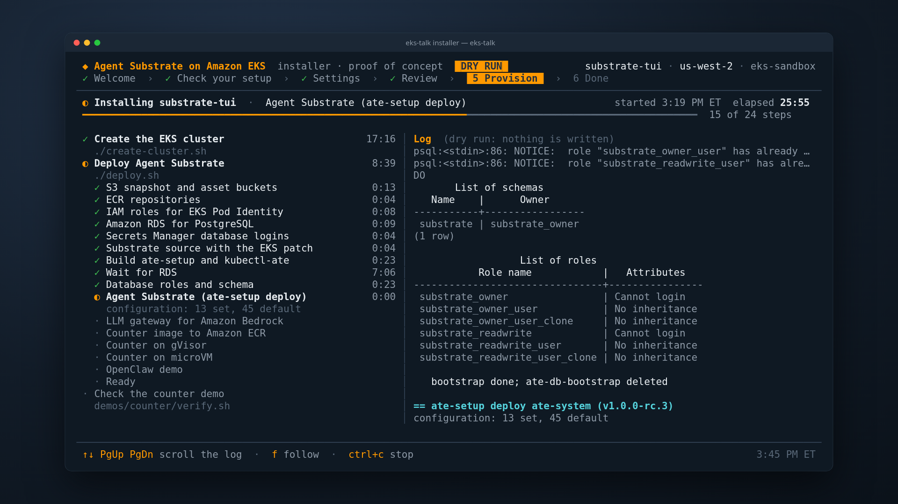

Agent Substrate Day
Running Agent Substrate
on EKS
What it takes on AWS, which services to use,
and where AWS can help the project
Carlos Santana
Sr. Specialist Solutions Architect, Amazon Web Services
Agenda
- Agent Substrate in one slide
- The architecture on AWS
- Cluster and sandboxes: EKS 1.37, gVisor, microVM
- Snapshots on S3, one IAM role per component
- State on RDS, with rotating logins
- Actor secrets and Bedrock, through the egress gateway
- Per-actor volumes: Amazon EFS and S3 Files
- Two demos
- Lessons, where AWS can help, production checklist
Everything shown runs on
Agent Substrate v1.0.0-rc.3EKS 1.37Amazon Linux 2023 m8i (nested virt)S3RDS for PostgreSQL 18 Secrets ManagerECRBedrock EFSS3 Files
No public application endpoints: every Service is ClusterIP.
Thousands of idle agents share a small pool of worker pods
One EKS cluster, three node groups, managed AWS services around it
Everything runs in private subnets, with no public application endpoints
![Agent Substrate on Amazon EKS in us-west-2: a VPC with public and private subnets; in the private subnets the EKS cluster with system, gVisor and microVM node groups running ate-api-server, ate-controller, ate-idp-server, atenet-router, atenet-egress, External Secrets with the Reloader, OpenClaw, efs-csi-controller-ate, agentgateway, atelet and worker pods; plus RDS for PostgreSQL and the rotation Lambdas; with Amazon S3, S3 Files, EFS, EBS, ECR, Secrets Manager, Bedrock, IAM with Pod Identity, CloudFormation and CloudWatch Logs.](agent-substrate-on-eks.png)
Every Substrate dependency maps to an AWS service
| Agent Substrate needs | On AWS | Status in rc.3 |
|---|---|---|
| Kubernetes with PodCertificate + ClusterTrustBundle | EKS 1.37 (both GA) | works, no flags |
| Snapshot object store | Amazon S3 via objectstore-plugin (ATE_STORAGE_BACKEND=s3) | works |
| microVM guest assets | S3 asset bucket, read-only for atelet | works; stock installer stages to GCS, small patch for S3 |
| PostgreSQL | Amazon RDS for PostgreSQL, BYO DSN + server CA | works |
| Workload identity | EKS Pod Identity (atelet, ate-api-server, LLM gateway) | works |
| Actor image pulls | ECR via the kubelet ecr-credential-provider that atelet runs | works |
| Nested virt for microVM | Intel 7th/8th-gen families (m8i here) with NestedVirtualization=enabled | works |
| Per-actor volumes (CSI) | Amazon EFS and S3 Files through the EFS CSI driver add-on | works; ExternalVolumes preview, mTLS-fronted controller |
| Egress credential injection | AWS Secrets Manager through the aws-sm-credential-provider plugin | works |
| Metrics | Amazon Managed Service for Prometheus | install ships a GKE PodMonitoring |
One node group per sandbox class, network policy on eksctl · EKS 1.37 · AL2023
apiVersion: eksctl.io/v1alpha5
kind: ClusterConfig
metadata: { name: substrate-day, region: us-west-2, version: "1.37" }
addons:
- name: vpc-cni # + enableNetworkPolicy: "true"
- name: eks-pod-identity-agent
- name: aws-ebs-csi-driver
managedNodeGroups:
- name: system # control plane components
instanceType: m8i.xlarge
disablePodIMDS: true # IMDSv2, hop limit 1
- name: gvisor
instanceType: m8i.2xlarge
disablePodIMDS: true
taints:
- { key: ate.dev/sandboxClass, value: gvisor,
effect: NoSchedule }
- name: microvm
instanceTypes: [m8i.2xlarge]
launchTemplate: { id: lt-… } # nested virt, hop limit 1
taints:
- { key: ate.dev/sandboxClass, value: microvm,
effect: NoSchedule }- One tainted node group per sandbox class
- Turn on VPC CNI network policy: Substrate's default-deny policies need it
- PodCertificate and ClusterTrustBundle are GA in 1.37: mTLS works on a stock cluster
- Private subnets for nodes and data stores
Two sandbox classes, one cluster
gVisor · soft isolation
- Userspace kernel intercepts syscalls
- Runs on any node, no special hardware
- Native checkpoint/restore of the process tree
- Class
gvisor; default SandboxConfiggvisor-default
microVM · VM isolation
- Kata guest on Cloud Hypervisor, its own guest kernel
- Needs
/dev/kvm; atelet advertises it asate.dev/kvm - Memory snapshot, restored on demand with userfaultfd
- Class:
microvm, guest assets from S3
Same ActorTemplate shape for both. Pick per workload with sandboxClasses on the WorkerPool.
Nested virtualization runs microVMs without bare metal
- Supported on recent Intel families. In us-west-2 today: c7im7ir7ic8im8ir8ii7ix8i plus flex and
dvariants. This demo uses m8i.2xlarge. - Turned on per instance through the launch template's
CpuOptions. - No bare metal needed to run Kata microVMs on EKS.
- Check from a node:
/dev/kvmexists and the CPU exposesvmx.
# launch template data for the microvm node group
{
"CpuOptions": { "NestedVirtualization": "enabled" },
"MetadataOptions": {
"HttpTokens": "required",
"HttpPutResponseHopLimit": 1 },
"BlockDeviceMappings": [{ "Ebs": {
"VolumeSize": 200, "Encrypted": true } }]
}
# find instance types that support it
aws ec2 describe-instance-types --filters \
Name=processor-info.supported-features,\
Values=nested-virtualization
# on a microvm node
crw-rw-rw- 1 root kvm 10, 232 /dev/kvm
kernel 6.18.56-125.164.amzn2023.x86_64Suspended actors live in S3, moved by a sidecar
- The
objectstore-pluginsidecar moves every snapshot ATE_STORAGE_BACKEND=s3, credentials from Pod Identity- A separate, read-only asset bucket for microVM guest assets
Bucket best practices
Block Public AccessBucketOwnerEnforceddefault encryptionTLS-only bucket policyabort incomplete uploads
# a golden (tag) snapshot in S3; an actor's own suspends
# go to atespaces/<a>/actors/<uid>/snapshots/<name>/
atespaces/ate-demo-counter/tags/<uid>/
manifest.json
pages.img.zstd # process memory
pages_meta.img.zstd
fs/pages.img.zstd # durable volumes
rootfs/fscheckpoint.pb.zstd
rootfs/multitar.img.zstd
rootfs/pages.img.zstd # root filesystem writes
# asset bucket (read-only for atelet)
microvm-assets/amd64/<sha256> # cloud-hypervisor
microvm-assets/amd64/<sha256> # virtiofsd
microvm-assets/amd64/<sha256> # guest kernel
microvm-assets/amd64/<sha256> # guest rootfsIdentity: EKS Pod Identity, one role per ServiceAccount
# trust policy, scoped to this account and cluster
{ "Principal": { "Service": "pods.eks.amazonaws.com" },
"Action": ["sts:AssumeRole", "sts:TagSession"],
"Condition": {
"StringEquals": { "aws:SourceAccount": "<account>" },
"ArnLike": { "aws:SourceArn": "arn:aws:eks:…:cluster/substrate-day" } } }
aws eks create-pod-identity-association \
--namespace ate-system --service-account atelet \
--role-arn arn:aws:iam::<account>:role/substrate-day-us-west-2-atelet| ServiceAccount | Allowed |
|---|---|
ate-system/ate-api-server | snapshot bucket: get, put, delete, list |
ate-system/atelet | snapshot bucket: get, put (no delete) · asset bucket read · ECR pull |
llm-gateway/llm-gateway | bedrock:InvokeModel* on one inference profile |
| actors | nothing: no role, no keys, no IMDS |
Lesson: atelet pulls actor images with its own role
atelet runs the node's ecr-credential-provider itself, so ECR pull on your actor repositories goes on atelet's Pod Identity role, not the node role.
Each component gets only the S3 actions it needs
Actor state lives in RDS: private, TLS verify-full, two logins
- Private subnets; 5432 open only to the cluster security group
- Two logins: owner (migrations) and readwrite (runtime), each in its own secret
sslmode=verify-fullagainst the RDS CA bundle- Connection strings in environment variables, never flags
# install: logins read from Secrets Manager
export ATE_API_POSTGRES_OWNER_CONNECTION_STRING=\
"postgres://substrate_owner_user:…@<rds>:5432/atepg\
?sslmode=verify-full&sslrootcert=/run/postgres-server-ca/server-ca.pem"
export ATE_API_POSTGRES_READ_WRITE_CONNECTION_STRING=…
ate-setup deploy ate-system \
--image-repo ghcr.io/agent-substrate/substrate \
--image-tag v1.0.0-rc.3 \
--snapshot-location s3://<snapshots>/ \
--ateapi-postgres-server-ca-file global-bundle.pem \
--sandbox-classes gvisor,microvm
# bootstrap tips for RDS
# - grant substrate_owner to the master user first:
# rds_superuser is not a superuser
# - run setup.sql with --single-transactionRotate the DB password, and ate-api-server follows
Rotation wiring, with no change to the Substrate manifests
apiVersion: external-secrets.io/v1
kind: ExternalSecret
metadata: { name: ate-db, namespace: ate-system }
spec:
refreshInterval: 1m
secretStoreRef: { kind: SecretStore, name: aws } # Pod Identity
target:
name: ate-api-server-secret-envvars # what ate-setup made
creationPolicy: Merge # keep its other keys
template:
data:
ATE_API_POSTGRES_READ_WRITE_CONNECTION_STRING: >-
postgres://{{ .user }}:{{ .pw | urlquery }}@<rds>:5432/atepg
?sslmode=verify-full&sslrootcert=/run/postgres-server-ca/server-ca.pem
data:
- { secretKey: user, remoteRef: { key: <cluster>/ate-readwrite, property: username } }
- { secretKey: pw, remoteRef: { key: <cluster>/ate-readwrite, property: password } }
# the owner login: the same, with ate-owner
---
apiVersion: reloader.external-secrets.io/v1alpha1
kind: Config
spec:
notificationSources: [{ type: KubernetesSecret }]
destinationsToWatch:
- { type: Deployment, deployment: { names: [ate-api-server] } }Rotation
- AWS-hosted
PostgreSQLMultiUserLambda - Private subnets, its own security group
- Every 30 days, or
rotate-secretnow
External Secrets Operator
- Templates both DSNs from username and password
- Controller only: no webhook, nothing listening
- IAM:
secretsmanager:GetSecretValueon<cluster>/ate-*
ESO Reloader
- Rolls ate-api-server when the Secret changes
- No change to the ate-api-server manifest
Actors use API keys they never hold
Actor secrets: the wiring and its three gates
# EgressPolicy on the actor
rules:
- https:
hostnames: ["api.github.com"]
effects:
replaceHeaders:
- header: Authorization
prefix: "Bearer "
credentialUri: ate-secret://secretsmanager.amazonaws.com/
accounts/<id>/regions/us-west-2/
secrets/ate/team-a/github/stages/AWSCURRENT
---
# provider policy: atespace -> secrets, default deny
policies:
- atespace: team-a
allowedSecrets:
- { account: "<id>", region: us-west-2, namePrefix: ate/team-a/ }Three gates
- mTLS: only atenet-egress may ask
- Provider policy: the atespace must be granted the secret
- IAM:
GetSecretValueonate/*with tagate.dev/injectable=true
On EKS
- Pod Identity role, no keys
- NetworkPolicy admits only atenet-egress
- Registered next to the bundled
k8s.ioprovider
Rotation
AWSCURRENTcached 30s- Rotate in Secrets Manager; actors pick it up, no redeploy
Actors reach Bedrock through a gateway, with no AWS credentials
Lesson: block IMDS for pods
Set disablePodIMDS: true (hop limit 1) on every node group, so the gateway signs with its own role, never the node instance role.
Why a gateway, not header injection
SigV4 signs each request's body hash, so signing lives in a proxy that holds the role.
Per-actor EFS volumes follow the actor to any zone CSI · ExternalVolumes preview
EFS wiring, and an actor moving between zones
# StorageClass: one access point per actor
provisioner: efs.csi.aws.com
parameters:
provisioningMode: efs-ap # s3files-ap for S3 Files
fileSystemId: fs-…
directoryPerms: "700"
uid: "<uid>" # EFS_UID: the actor's user
gid: "<gid>"
basePath: /ate
---
# CSIDriverConfig: where ate-api-server finds the controller
driverName: efs.csi.aws.com
controllerEndpoint: tcp://efs-csi-controller-ate.kube-system.svc…:50052
tls: { enabled: true, usePodIdentity: true,
serverName: efs-csi-controller-ate.kube-system.svc }
---
# ActorTemplate
volumes:
- name: data
external: { template: { capacityBytes: 1073741824,
storageClassName: efs-ate } }
containers:
- volumeMounts: [{ name: data, mountPath: /home/counter }]| Storage | Sandbox | Suspended in | Resumed in |
|---|---|---|---|
| EFS | gVisor | us-west-2c | us-west-2b |
| EFS | microVM | us-west-2a | us-west-2b |
| S3 Files | gVisor | us-west-2b | us-west-2c |
| S3 Files | microVM | us-west-2b | us-west-2a |
A captured run: the counter wrote its file on the first node and kept counting on the second, from the same access point.
Best practices
- Match the access point's uid to the actor's user: actors run without
CAP_DAC_OVERRIDE - Run actors as non-root; on S3 Files, root needs
ClientRootAccess - Turning on the preview reinstalls Substrate and rolls workers: plan it
Demo: suspend frees the worker, and every count keeps going gVisor and microVM
Watch for
- Each actor counts in memory, a file and the root filesystem: 3, 3, 3
- Suspend: the state turns
SUSPENDEDand the worker is free - The next request resumes it: all three read 4
kubectl ate create actor demo-gvisor -a ate-demo-counter --template counter
kubectl ate proxy actor demo-gvisor -a ate-demo-counter 8001:80 &
curl localhost:8001
kubectl ate suspend actor demo-gvisor -a ate-demo-counter
curl localhost:8001 # resumesCondensed from a run of this demo on the cluster above
Demo: an always-on agent that sleeps between messages OpenClaw
- An always-on gateway holds the chat channel
- Each conversation's agent is a suspendable actor
- It thinks with Bedrock and holds no keys
Watch for
- The actor answers, then suspends to S3
- The next message wakes it from its snapshot, and it answers again
- A new conversation gets a new actor
Flow
chat message → gateway → atenet-router (mTLS, pod certificate) → actor (resumes from S3) → atenet-egress (actor JWT) → LLM gateway → Bedrock → reply
Condensed from a run of this demo on the cluster above
What works on EKS today, and the rough edges
Works with rc.3
- Published images on stock EKS 1.37 and AL2023
- gVisor and microVM suspend and resume
- S3, RDS, ECR and Bedrock with Pod Identity
- NetworkPolicy with the VPC CNI
- Actor secrets injected from Secrets Manager
- Per-actor EFS and S3 Files volumes (preview)
Rough edges
ate-setupassumes GKE for any real cluster- GKE paths and a GKE
PodMonitoringin the install - S3 transfers use the pod's role, not per-actor tokens
- RDS needs a role grant before
setup.sql - DB password rotation needs a rolling restart
- EFS needs a second, Envoy-fronted CSI controller
Where AWS can help the project next
Neutral install seams
ate-setup deploy --component: install one piece at a timeate-setup render: hand the manifests to your own tooling- The EKS blueprint stays outside the project: eksctl, Terraform or CDK
Per-actor AWS access
- Per-actor S3 credentials for snapshot transfers
- Actor JWT to AWS token exchange
Plugins and drivers
- Secrets Manager provider in the project's plugins repo
- Password file for the database logins
- EFS CSI endpoint Substrate can call
An interactive installer on top of the same scripts proof of concept

What it adds
- Checks first: tools, account, Region, vCPU quota, nested virtualization
- Live checklist from the scripts' own steps
- Teardown from the Done screen
- Same
create-cluster.shanddeploy.shunderneath
Production checklist for EKS
Cluster
- EKS 1.37+
- Node group per sandbox class, tainted
- Nested-virt Intel family (m8i, c8i, r8i, 7i) for microVM
- VPC CNI network policy on
- IMDSv2 with hop limit 1
Data
- S3: private, TLS-only, encrypted, lifecycle
- Separate read-only asset bucket
- RDS private, verify-full, owner/readwrite split
- DB logins rotated, synced, rolled out
- Per-actor EFS access points, uid of the actor's user
Identity & access
- Pod Identity role per ServiceAccount
- No credentials in actors
- Bedrock through a gateway, one profile
--ateapi-authz-bootstrap-ownersset to your operators- ClusterIP only, port-forward to operate
- Private or CIDR-restricted EKS API endpoint
Thank you
Agent Substrate runs on EKS today.
Help us make it boring: plugins, neutral install seams, per-actor credentials.
github.com/agent-substrate/substrateagent-substrate-plugins


github.com/csantanapr/eks-agent-substrate